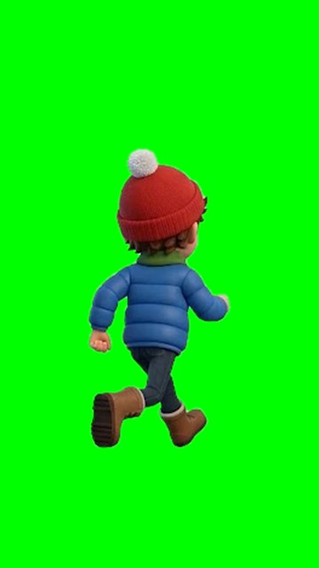
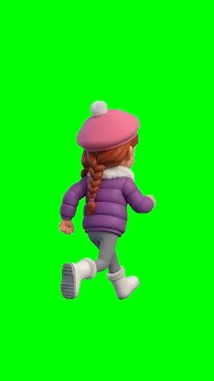
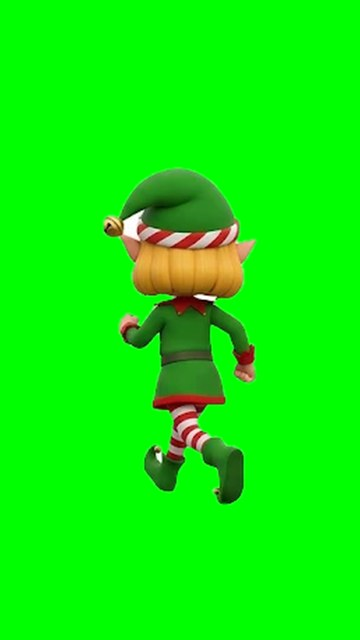
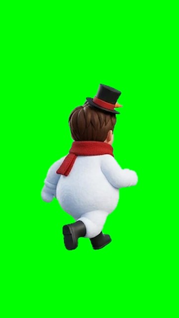
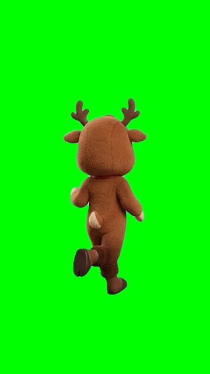
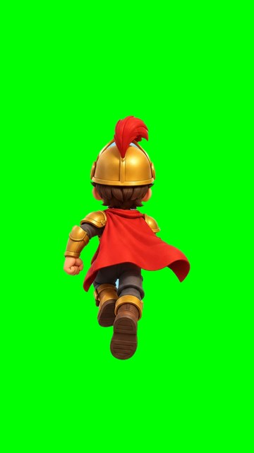
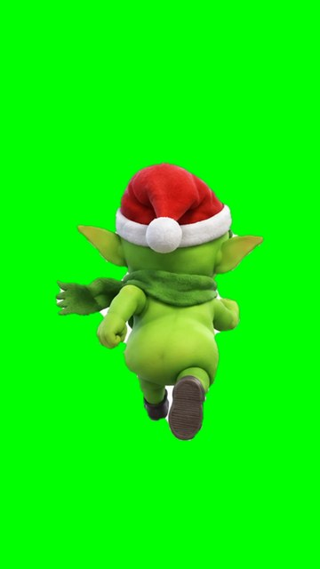

1. Minik Noel Baba (son karakter)
Resim yüklemeye gerek yok. Sadece bu yazıyı Gemini'ye yapıştır.
Character turnaround sheet for a mobile runner game, 6 poses of the SAME character arranged in a clean 3x2 grid on a SOLID FLAT LIGHT BLUE background (#8FD3FF, one single flat color, no gradient, no scene, no floor), each pose fully separated with lots of space, no shadows, no text, no labels. Character: a cheerful cartoon kid dressed as a little Santa Claus helper, stylized 3D cartoon render like Pixar / Clash of Clans / Subway Surfers, big expressive eyes, rosy cheeks, brown hair in two short pigtails, red Santa hat with white fur and pom-pom, red Santa coat with white fur trim and a wide black belt with a gold buckle, red pants, shiny black boots, white mittens. Poses (left to right, top to bottom): 1) front view standing, friendly smile 2) front view waving happily 3) BACK VIEW running away from camera, left leg forward 4) BACK VIEW running away from camera, right leg forward 5) BACK VIEW jumping high, arms up 6) BACK VIEW sliding low on the ground, one leg forward, leaning back. Draw all 6 poses. Same proportions, same scale and same outfit in every pose, full body visible, soft studio lighting.
2. Arda – 8 karelik koşu
Önce yandaki resmi Gemini'ye YÜKLE, sonra bu yazıyı yapıştır.


Bu resim (basılı tut → kaydet)Using the character in the attached image as the exact reference (same face, hair, hat, clothes, colors and proportions), draw an 8-frame RUN CYCLE animation sprite sheet of this character seen exactly FROM BEHIND, like the hero of an endless runner game (Subway Surfers). Layout: a clean 4x2 grid (4 frames on top row, 4 frames on bottom row), frames in animation order left to right, top to bottom. Each frame shows one step of a smooth running loop: frame 1 left leg forward, frames 2-4 passing to the right leg, frame 5 right leg forward, frames 6-8 passing back to the left leg, arms swinging opposite to the legs. The character is the SAME size and at the SAME position in every frame, centered in its cell, full body visible, back view in all frames. SOLID FLAT BRIGHT GREEN background (#00FF00) in every cell, no grid lines, no ground, no shadows, no text, no numbers.
3. Ela – 8 karelik koşu
Önce yandaki resmi Gemini'ye YÜKLE, sonra bu yazıyı yapıştır.


Bu resim (basılı tut → kaydet)Using the character in the attached image as the exact reference (same face, hair, hat, clothes, colors and proportions), draw an 8-frame RUN CYCLE animation sprite sheet of this character seen exactly FROM BEHIND, like the hero of an endless runner game (Subway Surfers). Layout: a clean 4x2 grid (4 frames on top row, 4 frames on bottom row), frames in animation order left to right, top to bottom. Each frame shows one step of a smooth running loop: frame 1 left leg forward, frames 2-4 passing to the right leg, frame 5 right leg forward, frames 6-8 passing back to the left leg, arms swinging opposite to the legs. The character is the SAME size and at the SAME position in every frame, centered in its cell, full body visible, back view in all frames. SOLID FLAT BRIGHT GREEN background (#00FF00) in every cell, no grid lines, no ground, no shadows, no text, no numbers.
4. Elf Kız – 8 karelik koşu
Önce yandaki resmi Gemini'ye YÜKLE, sonra bu yazıyı yapıştır.


Bu resim (basılı tut → kaydet)Using the character in the attached image as the exact reference (same face, hair, hat, clothes, colors and proportions), draw an 8-frame RUN CYCLE animation sprite sheet of this character seen exactly FROM BEHIND, like the hero of an endless runner game (Subway Surfers). Layout: a clean 4x2 grid (4 frames on top row, 4 frames on bottom row), frames in animation order left to right, top to bottom. Each frame shows one step of a smooth running loop: frame 1 left leg forward, frames 2-4 passing to the right leg, frame 5 right leg forward, frames 6-8 passing back to the left leg, arms swinging opposite to the legs. The character is the SAME size and at the SAME position in every frame, centered in its cell, full body visible, back view in all frames. SOLID FLAT BRIGHT GREEN background (#00FF00) in every cell, no grid lines, no ground, no shadows, no text, no numbers.
5. Kardan Çocuk – 8 karelik koşu
Önce yandaki resmi Gemini'ye YÜKLE, sonra bu yazıyı yapıştır.


Bu resim (basılı tut → kaydet)Using the character in the attached image as the exact reference (same face, hair, hat, clothes, colors and proportions), draw an 8-frame RUN CYCLE animation sprite sheet of this character seen exactly FROM BEHIND, like the hero of an endless runner game (Subway Surfers). Layout: a clean 4x2 grid (4 frames on top row, 4 frames on bottom row), frames in animation order left to right, top to bottom. Each frame shows one step of a smooth running loop: frame 1 left leg forward, frames 2-4 passing to the right leg, frame 5 right leg forward, frames 6-8 passing back to the left leg, arms swinging opposite to the legs. The character is the SAME size and at the SAME position in every frame, centered in its cell, full body visible, back view in all frames. SOLID FLAT BRIGHT GREEN background (#00FF00) in every cell, no grid lines, no ground, no shadows, no text, no numbers.
6. Ren Geyiği – 8 karelik koşu
Önce yandaki resmi Gemini'ye YÜKLE, sonra bu yazıyı yapıştır.


Bu resim (basılı tut → kaydet)Using the character in the attached image as the exact reference (same face, hair, hat, clothes, colors and proportions), draw an 8-frame RUN CYCLE animation sprite sheet of this character seen exactly FROM BEHIND, like the hero of an endless runner game (Subway Surfers). Layout: a clean 4x2 grid (4 frames on top row, 4 frames on bottom row), frames in animation order left to right, top to bottom. Each frame shows one step of a smooth running loop: frame 1 left leg forward, frames 2-4 passing to the right leg, frame 5 right leg forward, frames 6-8 passing back to the left leg, arms swinging opposite to the legs. The character is the SAME size and at the SAME position in every frame, centered in its cell, full body visible, back view in all frames. SOLID FLAT BRIGHT GREEN background (#00FF00) in every cell, no grid lines, no ground, no shadows, no text, no numbers.
7. Altın Şövalye – 8 karelik koşu
Önce yandaki resmi Gemini'ye YÜKLE, sonra bu yazıyı yapıştır.


Bu resim (basılı tut → kaydet)Using the character in the attached image as the exact reference (same face, hair, hat, clothes, colors and proportions), draw an 8-frame RUN CYCLE animation sprite sheet of this character seen exactly FROM BEHIND, like the hero of an endless runner game (Subway Surfers). Layout: a clean 4x2 grid (4 frames on top row, 4 frames on bottom row), frames in animation order left to right, top to bottom. Each frame shows one step of a smooth running loop: frame 1 left leg forward, frames 2-4 passing to the right leg, frame 5 right leg forward, frames 6-8 passing back to the left leg, arms swinging opposite to the legs. The character is the SAME size and at the SAME position in every frame, centered in its cell, full body visible, back view in all frames. SOLID FLAT BRIGHT GREEN background (#00FF00) in every cell, no grid lines, no ground, no shadows, no text, no numbers.
8. Zibo – 8 karelik kaçış koşusu
Önce yandaki resmi Gemini'ye YÜKLE, sonra bu yazıyı yapıştır.


Bu resim (basılı tut → kaydet)Using the character in the attached image as the exact reference (same face, hair, hat, clothes, colors and proportions), draw an 8-frame RUN CYCLE animation sprite sheet of this character seen exactly FROM BEHIND, like a sneaky goblin thief escaping in an endless runner game, carrying nothing in his hands. Layout: a clean 4x2 grid (4 frames on top row, 4 frames on bottom row), frames in animation order left to right, top to bottom. Each frame shows one step of a smooth running loop: frame 1 left leg forward, frames 2-4 passing to the right leg, frame 5 right leg forward, frames 6-8 passing back to the left leg, arms swinging opposite to the legs. The character is the SAME size and at the SAME position in every frame, centered in its cell, full body visible, back view in all frames. SOLID FLAT BRIGHT GREEN background (#00FF00) in every cell, no grid lines, no ground, no shadows, no text, no numbers.
9. Mahalle evleri
Resim yüklemeye gerek yok.
A 3x2 grid of 6 separate cute cartoon goblin-village cottages for a mobile game, isometric 3/4 view from the front-left, stylized 3D render like Clash of Clans / Hay Day buildings, snowy roofs, warm glowing windows, small Christmas lights, each house standing on its own small snowy square patch of ground, on a SOLID FLAT LIGHT BLUE background (#8FD3FF), lots of space between houses, no text, no labels, no people. Houses in order: 1) a bakery cottage with a big bread sign (no letters) and a chimney 2) a post office cottage with a red mailbox 3) a school-teacher's cottage with a small bell tower 4) a carpenter's workshop cottage with stacked logs 5) a skier's chalet with skis leaning on the wall 6) a gardener's cottage with a little snowy greenhouse.
10. Altın Avı silahları
Resim yüklemeye gerek yok.
A 3x2 grid of 6 separate game weapon icons on a PURE WHITE background, thin grey lines between cells, stylized 3D cartoon render like Clash of Clans / Hay Day item icons, soft studio lighting, each item centered in its own cell with white space around it, no ground shadows, no text, no labels. Kid-friendly, snowball-fight toys, not real weapons. Exact order, left to right, top to bottom: Row 1: a big round fluffy SNOWBALL | a wooden SLINGSHOT with a red rubber band | a toy launcher shaped like a giant red-and-white CANDY CANE Row 2: a glowing light-blue ICE BALL with frost sparkles | a magic SNOW WAND, a wooden staff with a glowing snowflake crystal on top | a magic THUNDER WAND, a golden staff with a glowing yellow lightning crystal on top
11. Uygulama ikonu
Resim yüklemeye gerek yok. Google Play'deki simge olacak.
Mobile game app icon, 1:1 square, close-up of a mischievous cute green goblin (big pointy ears, Santa hat, sly grin, holding a stolen red Christmas stocking) peeking in front of a snowy night sky, stylized 3D render like Clash of Clans app icons, bold saturated colors, strong rim light, simple background, no text, no letters, no border.
12. Mağaza afişi
Resim yüklemeye gerek yok. Google Play sayfasının üstündeki büyük resim olacak.
Mobile game store banner, wide 1024x500 landscape, stylized 3D render like Clash of Clans / Subway Surfers key art: a cute green goblin with a Santa hat running away on a snowy cobblestone village street at night carrying a big sack of stolen Christmas presents, a cheerful kid in a red beanie and blue puffy jacket chasing him, glowing houses with Christmas lights on both sides, a crooked purple mansion on a hill in the background, snow falling, dynamic action, leave the left third slightly calmer for a logo, no text, no letters.